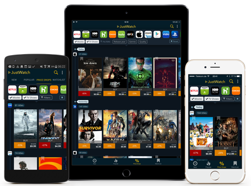

Ever wanted to release your mobile app more quickly?
Over-the-air (OTA) Updates
with
#ME

Simon Wicki (@zwacky)
Head of Frontend at JustWatch.com
- legal streaming search engine
- available in 9 countries (soon 10)
- 1M+ app downloads as of Feb '16
What can OTA do for you?
Over The Air
Update your App outside AppStore/Play Store
- üëç: Update templates, js, images, ... instantly
- üëç: No AppStore reviews
- üí©: No native alterations
Does AppStore allow it?
Yes.
But... Your app has to be doing still the same.
What is available and what do they offer
Services/Plugins

- Currently in Alpha
- Not recommended to use in production apps by ionic itself
- Free while in Alpha
- http://docs.ionic.io/docs/deploy-overview
- Currently in Beta (1.5.0-beta)
- Free while in Beta
- Also available for React Native
- Open source
- by Microsoft
- https://github.com/Microsoft/cordova-plugin-code-push
Summary
- Multi environments (stage, prod, ...)
- Rollback mechanisms
- CodePush: native rollback
- Question of 'what stack'
How does it work?
Life Cycle
In 3 steps
CodePush Implementation
#1 Deployment Key
config.xml
PROTIP: or set it programmatically for stage/prod OTA updates in JS
window.codePush.checkForUpdate(
onUpdateCheck,
onCheckError,
isBetaTester() ? deployKeys.beta : deployKeys.prod
);
#2 Security Policies
config.xml
index.html
#3 JavaScript implementation
// sugar method that does *everything*
codePush.sync();
"Everything" means...
- Dialog for user interaction
- Download
- Install
- Tell that the installation was successful
- Reload app
more work, more flexibility
Manual Update
Install Modes
- IMMEDIATE
- ON_NEXT_RESTART
- ON_NEXT_RESUME
Possible Update Strategies
- Regular Update
- Stealth Update
- Relentless Update
Deployment
Build ionic app
cordova prepare
// or whatever you use to package your app.
// basically to that point so that
// `ionic run [platform]` doesn't fail.
the packaged app will be built in:
- ./platforms/ios/www
- ./platforms/android/assets/www
Upload app with app version
code-push release justwatch ./platforms/ios/www 0.5.11 -d "ios-stage"
options
- --mandatory (will be inherited)
- --description "descr"
Greenlight the update
code-push promote justwatch ios-stage ios-prod
Breaking the app
Rollback
- through CLI
- natively by the plugin if update has failed
- codePush.notifyApplicationReady
Ever wanted to release your mobile app more quickly?
Now you know how
Update finished. Thank you!